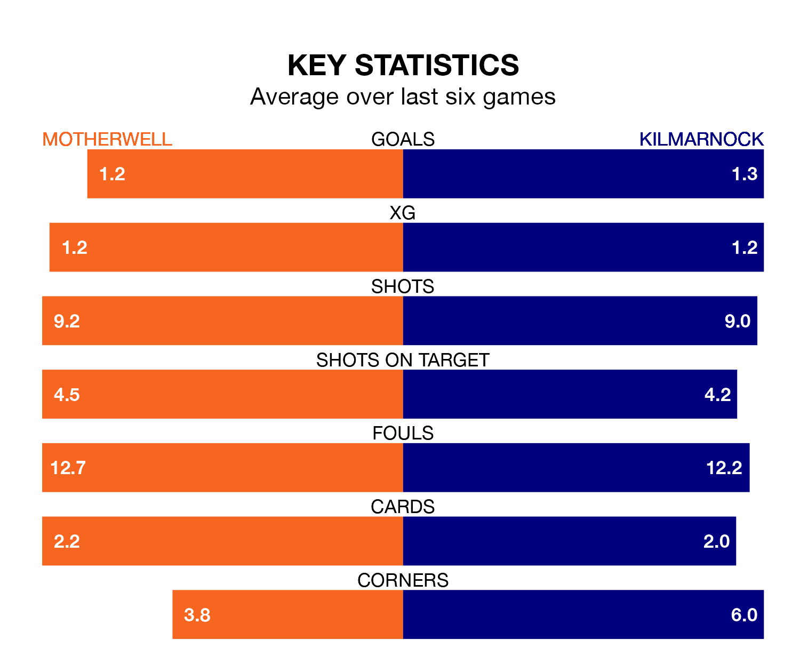

Mid-season relegation candidates Motherwell face a challenge against high-flying Kilmarnock at Fir Park on Saturday.
Motherwell are ninth in the Premiership table, and have picked up four wins and nine draws in their 22 games to date.
Killies, meanwhile, are fourth in the standings with 32 points, having won eight and drawn eight of their first 23 matches, and are 25 points behind table-toppers Celtic.
In the last 10 years, Motherwell and Kilmarnock have played each other on 30 occasions. Motherwell won 14 of them, Kilmarnock 11, and they drew five times.
On average, Motherwell scored 1.1 goals and Killies 1.1 in those matches.
Their last meeting was on November 4, when Kilmarnock won 1-0 at home.
With 26 goals in 23 games so far this season, Kilmarnock are scoring at below the league average rate with 1.1 goals per game. But they are conceding fewer than average too, letting in 25 goals at a rate of 1.1 per game.
Motherwell are also below average scorers, with 1.2 goals per game, compared to a league average of 1.3. They have conceded 1.6 goals per game.
In Will Dennis, Killies can rely on one of the league's safest pair of hands. He has kept eight clean sheets in his 22 appearances this season in Premiership.
In the hosts' net, Liam Kelly has two clean sheets in 22 games. He has conceded a goal every 62 minutes, 60% more often than the 102 minutes between goals for Dennis.
Motherwell are in mixed form in Premiership, with one win and four draws from their last six games.
With two wins and three draws over that period, the away team's form is slightly better – they have taken nine points from 18, compared to Motherwell's seven.
Motherwell's last match was on January 27, a 1-1 draw against St. Johnstone, with Thelonius Bair getting the goal for Motherwell.
Kilmarnock drew 2-2 with Hibernian last time out, also on January 27, with Dylan Vente (own goal) and Matthew Kennedy on the scoresheet.
Updated: 10:03 (UTC), 30/01/24